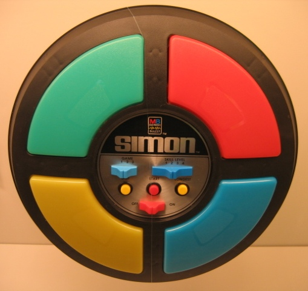

This is not just another Simon Game application, but it is an unusual one. It's been built thinking in make it accessibly to everyone, specially to the blind people.

You can listen this text as well as reading it. There are sounds to help blind people to play the game and there are instructions about the composition and structure of the visual elements.
At the top of this screen there is a menu which is going to be always in the same position and contains this four links, from the left to the right: the SIMON logo which links to this page, a LOG IN link to log into the application as a registered member, an ABOUT link which contains information about Simon Game history and this application, and finally a PLAY link linking to the playing screen.
Now, if you want to get some instructions about the game you can touch at the lower part of this screen where it is a big enough button which goes from side to side of this screen.
If you prefer it, you can start playing straight away touching over the PLAY button at the top right corner of the screen.